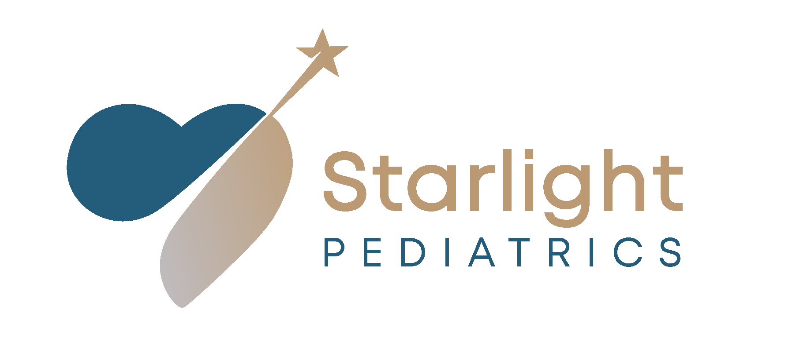

Starlight.MD
Purpose-built practice management for DPC physicians who refuse to compromise on patient care.
The Thesis
Direct Primary Care is the fastest-growing movement in American medicine. Over 25,000 physicians have left fee-for-service to practice membership-based, insurance-free medicine. Yet not a single platform is purpose-built for how they actually run their practices.
DPC doctors juggle 4–7 disconnected tools: a generic EMR, a separate billing system, a CRM spreadsheet, a messaging app, a scheduling tool, and maybe a Google Sheet for revenue tracking. They spend 40% of their non-clinical time on administrative tasks that should be automated.
Starlight.MD is the all-in-one operating system built by a DPC doctor, for DPC doctors. It combines patient management, membership billing, pipeline CRM, automated communications, wellness scheduling, revenue analytics, and clinical workflows — all in a single platform designed from the ground up for the DPC model.
We're not adapting a fee-for-service EMR for DPC. We started with a real DPC pediatric practice — Starlight Pediatrics in Austin, TX — and built exactly what the doctor needed. Our CMO, Dr. Yogini Prajapati, currently uses Atlas.md as her EMR and had to commission an entirely separate platform (which became Starlight.MD) because Atlas.md couldn't handle her practice management, pipeline, communications, or revenue needs. Every feature exists because she needed it on real patients.
What We've Already Built
Starlight.MD isn't a pitch deck — it's a working product currently managing a live DPC pediatric practice with 21 patients, processing real revenue, and sending real patient communications. Our prototype includes:
- 14-page practice management platform with dashboard, patient management, pipeline CRM, billing, wellness scheduling, actions, revenue analytics, messaging hub, pricing guide, practice reports, and data backup
- 17 email templates with merge tags, CAN-SPAM compliance, and professional HTML formatting
- 5-step automated nurture sequences for prospect conversion
- Age-based tier pricing engine with automatic plan change detection and alerts
- Google Review tracking with 30-day follow-up cadence
- Newborn home visit checklist with structured clinical assessment
- Revenue simulator with what-if scenario modeling
- 4-layer data protection with auto-backup and recovery
The Ask
We're raising a $500K pre-seed round to hire 2 engineers, achieve HIPAA compliance, migrate to a cloud backend, onboard 50 DPC practices in a 6-month pilot, and prove product-market fit before a Series A.
Problem & Opportunity
DPC is booming. The tools haven't kept up.
The DPC Movement
Direct Primary Care eliminates insurance middlemen entirely. Patients pay a monthly membership fee directly to their doctor in exchange for unlimited access, longer visits, same-day appointments, and 24/7 communication. No copays. No claim forms. No prior authorizations.
The model works — DPC practices report 40% lower overhead than traditional practices, 93% physician satisfaction, and 20% fewer ER visits among their patient panels. The movement has grown from ~1,000 practices in 2018 to over 2,500+ practices in 2026.
The Tool Problem
Despite this growth, DPC doctors are forced to use tools built for a fundamentally different business model:
| What DPC Needs | What Exists Today | The Gap |
|---|---|---|
| Membership billing (monthly/annual) | Insurance claim processors | Completely wrong billing model |
| Pipeline CRM for prospects | Nothing — spreadsheets | No conversion tracking |
| Patient communication hub | Personal texting + email | No templates, no tracking, no automation |
| Revenue analytics (MRR/ARR) | Accounting software | Not integrated with patient data |
| Wellness scheduling (preventive) | Sick-visit focused schedulers | DPC is wellness-first, not sick-first |
| Family billing (sibling discounts) | Individual patient billing | DPC family plans are common |
| Age-based tier pricing | Fixed fee schedules | Pediatric DPC has age-tier models |
| Practice growth tools | Separate marketing platforms | No referral tracking or review automation |
Here's what Dr. Yogini Prajapati actually uses today to run Starlight Pediatrics: Atlas.md ($300/mo, EMR + basic billing) + personal iPhone (texting parents) + Gmail (email communication) + Google Sheets (revenue tracking, prospect pipeline) + Wix (website) + Instagram/Facebook (marketing). That's 6 disconnected tools — and she still had to build a custom app to fill the gaps Atlas.md couldn't cover.
Why Now
- DPC legislation expanding: 38 states now have DPC-enabling laws (up from 25 in 2020)
- Employer adoption: Self-insured employers are adding DPC as a benefit, driving 2x patient panel growth
- Physician burnout crisis: 53% of physicians report burnout; DPC is the #1 cited alternative
- AI-native advantage: We can build intelligent automation (nurture sequences, wellness predictions, revenue optimization) that legacy EMRs like Atlas.md can't retrofit into 2012-era code
- Pediatric DPC is the wedge: The fastest-growing DPC segment (30% YoY) with zero purpose-built tools
- Post-COVID trust shift: Parents want direct physician relationships, not impersonal health systems
- Working prototype: Unlike every other DPC tool idea, we already have a production system managing a real practice
Product Overview
Everything a DPC practice needs. Nothing it doesn't.
Core Modules
1. Smart Dashboard
At-a-glance KPIs: active patients, MRR, upcoming wellness checks, overdue payments, pipeline prospects, and referral leaderboard. Actionable alerts with one-click resolution (mark paid, schedule check, send reminder).
2. Patient Management
Full patient profiles with dynamic table views for active patients vs. prospects. Contact info, visit history, payment status, family linking, email log, timestamped notes. Sortable columns, search, and filter by status.
3. Prospect Pipeline (CRM)
Kanban board with 4-stage workflow: Inquiry → Meet & Greet → Scheduled Visit → Ready to Enroll. Inline follow-up date editing, due date tracking, and one-click enrollment. Pipeline-specific columns (phone, email, follow-up date) replace irrelevant clinical fields.
4. Membership Billing
Age-based tier pricing engine (5 tiers from newborn to young adult). Automatic plan change detection with EMR alerts. Payment status tracking with overdue dashboards. Family discount calculations (25% sibling, $500/mo cap, 5% annual prepay).
5. Wellness Scheduling
AAP guideline-based scheduling for 9 well-child checkpoints (2–30 months). Calendar view with scheduling modal, doctor notes, and completion tracking. Auto-generates reminder emails for upcoming checks.
6. Communication Hub
Six-tab messaging center:
- Patient Journey — Visual birth-to-childhood timeline with 16 milestones and auto-triggered templates
- Send Now — Smart reminders based on real patient data (wellness due, billing changes, newborn check-ins)
- Templates — 17 professionally written templates across 5 categories with merge tags
- Reviews — Google Review tracking with 30-day follow-up cadence and send history
- Nurture — 5-step automated prospect drip campaign (Day 0, 2, 5, 10, 21)
- Sent Log — Complete email audit trail per patient
7. Revenue Analytics
MRR/ARR calculations, 6-month forecast, 12-month projection table, revenue by tier, historical data with year filtering, and a growth simulator with what-if sliders for tier-level patient changes.
8. Clinical Workflows
Visit logging with type classification (well-child, sick, home visit, phone consult). Newborn home visit checklist with 20 structured assessment items across 5 categories. Color-coded visit timeline.
9. Practice Report
Printable/PDF-ready practice summary: patient census, revenue metrics, wellness compliance, pipeline status, referral attribution. One-click print with optimized print CSS.
10. Website Lead Capture
Embeddable HTML form snippet for Wix/Squarespace. URL parameter-based auto-import with duplicate detection. New leads auto-enter pipeline as inquiries with "Website" referral source.
All emails use a unified HTML template with Starlight Pediatrics logo header, branded gradient, CAN-SPAM compliant footer, social links (Instagram, Facebook, website), and professional signature. Preview-before-send modal ensures nothing goes out without review. Powered by EmailJS (200 free emails/month, zero backend required).
Atlas.md Deep Dive
Our CMO's current EMR — and why she needed something more.
Dr. Yogini Prajapati has been using Atlas.md ($300/month) since launching Starlight Pediatrics. She knows the platform intimately — its strengths, its gaps, and exactly where it fails DPC pediatric practices. This section reflects real-world usage, not marketing claims.
What Atlas.md Is
Founded: 2012 in Wichita, KS · Funding: Bootstrapped · Customers: ~400 DPC practices · Price: $300/mo per provider + 2.1% payment processing
Atlas.md is a cloud-based EMR and billing platform specifically built for Direct Primary Care. It was one of the first DPC-specific tools and remains the most commonly used EMR among DPC practices. It handles clinical charting, basic billing, and patient messaging.
What Atlas.md Does Well
| Capability | Details |
|---|---|
| Clinical Charting | Clean, pen-and-paper feel. AI-powered SOAP notes. Diagnosis suggestions with ICD-10 lookup. Voice transcription for notes. |
| Patient Messaging | Direct video calling from EMR. Text message integration with auto-archive to charts. Unlimited fax, phone, email, text tracking. |
| Prescriptions | In-office dispensing. Pharmacy integration. Direct ePrescribing. CC pharmacy on emails. |
| Lab Integration | Quest, LabCorp, and 100+ regional labs via ELLKAY partnership. Results import directly to charts. |
| Family Scheduling | Recent addition: family member self-scheduling via Patient Hub and Patient App. Single family account. |
| DPC Workflow | Built ground-up for subscription model. Membership management. Not a retrofitted insurance EMR. |
Where Atlas.md Falls Short
These are the gaps that forced Dr. P to build Starlight.MD as a companion platform:
- No prospect pipeline or CRM
- No nurture sequences or drip campaigns
- No patient journey mapping
- No Google Review tracking
- No MRR/ARR dashboards
- No revenue forecasting or growth modeling
- No age-based tier pricing automation
- No plan change alerts
- No family discount calculations
- No AAP wellness check calendar
- No newborn home visit checklists
- No email template library with merge tags
- No website lead capture
- No referral source tracking
- No practice growth analytics
- Patients can't see labs in portal
- Patients can't see chart notes
- Dated 2012-era UI
- Occasional system crashes
- 4-stage Kanban pipeline CRM
- 5-step automated nurture sequences
- 16-milestone patient journey timeline
- Google Review tracking + 30-day follow-up
- Real-time MRR/ARR dashboards
- 12-month forecasting + growth simulator
- 5-tier age-based pricing engine
- Automatic plan change alerts with dates
- 25% sibling discount, $500/mo cap
- 9-checkpoint AAP wellness calendar
- 20-item structured home visit checklist
- 17 templates with 8+ merge tags
- Wix/Squarespace embeddable form
- Referral leaderboard on dashboard
- Revenue by tier, cohort, and scenario
- Full email audit trail per patient
- Preview-before-send for all comms
- Modern 2026 UI built with Nunito font
- 4-layer data protection + auto-backup
The Strategic Opportunity
Atlas.md is good at clinical workflows (charting, prescriptions, lab orders) and bad at everything else (business operations, growth, communications, analytics). This creates two possible strategies:
Launch Starlight.MD as a practice management layer that sits alongside Atlas.md. Doctors keep Atlas for charting and prescriptions, use Starlight.MD for pipeline, communications, billing analytics, and growth. Faster to market, lower switching cost.
Build clinical charting into Starlight.MD (Phase 3 roadmap) and offer a complete replacement. Doctors drop Atlas.md entirely and save $300/month. Higher revenue per practice, but requires clinical feature parity.
Our recommendation: Start with Strategy A (complement) to accelerate adoption, then execute Strategy B (replace) as we build clinical features. This mirrors how Stripe started as payments-only before expanding to Atlas (billing), Radar (fraud), and the full financial stack.
What Atlas.md Users Say
"The charting is great and feels natural. But I'm still using Google Sheets to track my revenue and a spreadsheet for my prospect pipeline. For $300/month, I expected more business tools."
"The patient portal is basically read-only. My parents can't see lab results or visit notes. For a DPC practice where transparency is the whole point, that's a problem."
"I love that it's DPC-native, but the UI feels stuck in 2015. And the analytics are basically non-existent."
Competitive Landscape
Every tool DPC practices use today, and where they fall short.
The Landscape
No single platform serves DPC practices end-to-end. The market is fragmented across EMRs, billing tools, and practice management suites — all built for fee-for-service medicine and retrofitted (poorly) for DPC.
Direct Competitors
| Platform | Type | DPC Focus | Price | Key Weakness |
|---|---|---|---|---|
| Atlas.md | DPC EMR | Yes | $300/mo | Clinical-only — no CRM, no comms, no analytics, dated UI |
| Hint Health | DPC Billing | Yes | $199–499/mo | Billing only — no EMR, no CRM, no communications |
| Elation Health | EMR | Partial | $349–599/mo | Fee-for-service EMR with DPC "mode" — heavy, complex, insurance-centric |
| Cerbo | EMR | Partial | $350+/mo | Functional medicine focus, not DPC-native. Complex. No pipeline. |
| SigmaMD | DPC Platform | Yes | Varies | Newer entrant, less community trust. Better pediatric features than Atlas. |
| Practice Better | Practice Mgmt | No | $69–129/mo | Built for wellness coaches, not physicians. No clinical workflows. |
| Jane App | Practice Mgmt | No | $54–114/mo | Allied health focus. Insurance billing centric. No membership model. |
Feature Comparison Matrix
| Feature | Starlight.MD | Atlas.md | Hint Health | Elation | Cerbo |
|---|---|---|---|---|---|
| Clinical charting (SOAP) | Roadmap | ✓ | ✗ | ✓ | ✓ |
| ePrescribing | Roadmap | ✓ | ✗ | ✓ | ✓ |
| Lab integration | Roadmap | ✓ | ✗ | ✓ | ✓ |
| Membership billing | ✓ | ✓ | ✓ | ~ | ~ |
| Age-based tier pricing | ✓ | ✗ | ✗ | ✗ | ✗ |
| Auto plan-change alerts | ✓ | ✗ | ✗ | ✗ | ✗ |
| Prospect pipeline CRM | ✓ | ✗ | ✗ | ✗ | ✗ |
| Nurture sequences | ✓ | ✗ | ✗ | ✗ | ✗ |
| Email templates + merge tags | ✓ | ✗ | ✗ | ~ | ~ |
| Patient journey timeline | ✓ | ✗ | ✗ | ✗ | ✗ |
| Wellness scheduling (AAP) | ✓ | ✗ | ✗ | ✓ | ~ |
| Revenue analytics (MRR/ARR) | ✓ | ✗ | ✓ | ✗ | ✗ |
| Growth simulator | ✓ | ✗ | ✗ | ✗ | ✗ |
| Google Review tracking | ✓ | ✗ | ✗ | ✗ | ✗ |
| Family linking + discounts | ✓ | ~ | ~ | ✗ | ✗ |
| Referral tracking | ✓ | ✗ | ✗ | ✗ | ✗ |
| Website lead capture | ✓ | ✗ | ✗ | ✗ | ✗ |
| Home visit checklists | ✓ | ✗ | ✗ | ~ | ✗ |
| Video visits | Roadmap | ✓ | ✗ | ✓ | ✓ |
| Features (of 19) | 14 + 5 roadmap | 5 | 3 | 6 | 5 |
Atlas.md — the platform Dr. P currently pays $300/month for — has 5 of 19 features. Starlight.MD already has 14, with 5 more on the roadmap. Even the most feature-rich competitor (Elation at $599/mo) only has 6. No competitor is even close to what Starlight.MD already offers for practice management.
Competitive Moat
Five layers of defensibility that compound over time.
The Flywheel
.MD
Practices
Templates &
Workflows
Satisfaction
Referrals &
Reviews
Each new practice contributes templates, workflows, and benchmarks that make the platform better for everyone.
Switching Cost Analysis
| Switching Cost | Strength | Why |
|---|---|---|
| Patient data migration | High | Years of visit logs, notes, family relationships, communication history |
| Template library | High | Customized communication templates and nurture sequences take months to build |
| Workflow habits | Medium-High | Staff retraining is expensive for small 1-3 person practices |
| Revenue history | Medium | Historical analytics, forecasting baselines, and growth simulator models |
| Pipeline + nurture data | Medium | Prospect pipeline history and conversion patterns are practice IP |
Market Sizing
Large market, concentrated buyer, clear wedge.
Total Addressable Market (TAM)
TAM Calculation
| Segment | Practices | Avg. Annual Spend | Revenue |
|---|---|---|---|
| DPC Primary Care (Adult) | 2,000 | $3,600/yr ($300/mo) | $7.2M |
| DPC Pediatrics | 400 | $3,600/yr | $1.4M |
| DPC Family Medicine | 600 | $3,600/yr | $2.2M |
| Concierge/Hybrid Practices | 12,000 | $6,000/yr ($500/mo) | $72M |
| Employer DPC Programs | 5,000 | $12,000/yr ($1,000/mo) | $60M |
| Total TAM | 20,000 | ~$143M (core) — $780M (expanded) |
*Expanded TAM includes adjacent membership medicine: functional medicine, integrative health, longevity practices.
Wedge Strategy: Pediatric DPC First
1. Fastest growing DPC segment — 30% YoY growth vs. 15% for adult DPC
2. Highest switching pain — age-based tiers, wellness schedules, and newborn workflows are uniquely complex
3. Tight community — pediatric DPC doctors know each other; referrals spread fast
4. We have the founder — Dr. Yogini Prajapati is a practicing pediatric DPC physician running her practice on the platform
5. Atlas.md is weakest here — zero pediatric-specific features (no growth charts, no AAP scheduling, no newborn checklists)
Expansion Path
Pricing Strategy
Simple, transparent pricing that mirrors the DPC ethos.
DPC doctors hate surprise fees — that's literally why they left insurance. Our pricing is flat-rate, transparent, and scales with practice size, not feature gates. Every plan gets every feature.
Up to 200 patients
Up to 600 patients
Unlimited patients
Pricing vs. The Current Stack
| Platform | Monthly Cost | What You Get | Still Need to Buy |
|---|---|---|---|
| Starlight.MD Solo | $149 | Everything (practice mgmt) | Atlas.md for charting ($300) |
| Starlight.MD Solo (Phase 3+) | $149 | Everything incl. charting | Nothing |
| Atlas.md alone | $300 | Charting + basic billing | CRM + comms + analytics + growth tools |
| Hint Health | $199–499 | Billing only | EMR + CRM + messaging + analytics |
| Elation Health | $349–599 | EMR + scheduling | DPC billing + CRM + messaging |
| Dr. P's current stack* | $300+ | Atlas.md + free tools | Still missing: CRM, analytics, automation, growth |
*Dr. P's actual cost: Atlas.md ($300/mo) + free tools (Gmail, Google Sheets, personal phone). The "free" tools cost 10+ hours/week in manual work.
Revenue Per Practice Economics
Go-to-Market Strategy
Community-led growth in a tight-knit market.
DPC is a Community, Not a Market
DPC physicians are an unusually tight-knit group. They share tools on Facebook groups, recommend software at conferences, and trust peer endorsements over advertising. Our GTM strategy exploits this by leading with community, credibility, and clinical proof.
Channel Strategy
| Channel | Tactic | Expected CAC | Volume |
|---|---|---|---|
| DPC Conferences | Demo booth at DPC Summit, Hint Summit, AAFP DPC track | $200 | 50-100 leads/event |
| DPC Facebook Groups | Dr. P shares real practice screenshots + "how I run my practice" posts | $0 | 10-20 leads/month |
| Atlas.md User Community | Position as the practice management companion Atlas.md users need | $50 | 10-15 leads/month |
| DPC Frontier Directory | Listed as recommended tool; integration partnership | $50 | 5-10 leads/month |
| Pediatric DPC Network | Direct outreach to the ~400 pediatric DPC practices via Dr. P's network | $0 | 3-5 signups/month |
| Content/SEO | "How to start a DPC practice" guides, DPC revenue calculator, free templates | $30 | 20-30 leads/month |
| DPC Residency Programs | Free tier for residents planning DPC practices post-training | $0 | Lifetime customers |
Launch Sequence
Having a practicing DPC physician as co-founder and CMO is our single biggest GTM asset. Dr. Yogini Prajapati can walk into any DPC conference, pull up her actual Atlas.md alongside Starlight.MD, and show exactly what she was missing. That authenticity cannot be manufactured or replicated by competitors.
Financial Projections
Conservative model with clear path to profitability.
3-Year Revenue Projections
Key Assumptions
| Metric | Year 1 | Year 2 | Year 3 |
|---|---|---|---|
| Practices (end of year) | 50 | 200 | 500 |
| Blended ARPU (monthly) | $175 | $225 | $299 |
| Annual Recurring Revenue | $612K | $1.26M | $1.8M |
| Monthly Churn | 3% | 2% | 1.5% |
| Gross Margin | 85% | 90% | 92% |
| Customer Acquisition Cost | $400 | $300 | $250 |
| LTV:CAC Ratio | 5:1 | 8:1 | 12:1 |
| Net Revenue | $520K | $1.13M | $1.66M |
Cost Structure
| Category | Year 1 | Year 2 | Year 3 |
|---|---|---|---|
| Engineering (B4M allocation + hires) | $280K | $420K | $560K |
| Sales & Marketing | $80K | $150K | $250K |
| Infrastructure (cloud, HIPAA) | $24K | $48K | $72K |
| Customer Success | $0 (founders) | $75K | $150K |
| Legal & Compliance | $30K | $15K | $15K |
| Founder Compensation | $180K | $240K | $300K |
| Total Costs | $594K | $948K | $1.35M |
| Net Income | -$74K | $182K | $310K |
We reach cash-flow breakeven at ~55 practices (Month 12). By end of Year 2, we're generating $182K in net income on $1.13M revenue. The $500K pre-seed gives us 18 months of runway — more than enough to reach profitability without needing additional funding.
Use of Funds ($500K Pre-Seed)
Team
Clinical credibility meets a 35-person engineering org and enterprise product vision.
Why This Team
Clinical (Dr. P): A practicing DPC pediatrician who IS the user. She tests features on real patients every day and has the community trust that opens doors at every DPC conference in America.
Product & Business (Deepak, CPO): Built the entire working prototype. Enterprise product experience at scale. AI-native thinking. Investor relations experience from Futurum. Drives product vision, growth strategy, and fundraising.
Technology (Erik): Not just a CTO — a CEO of a 35-person engineering organization. Bike4Mind brings production-grade AI/ML, full-stack, and DevOps capacity from day one. No hiring ramp. No infrastructure buildout. We deploy the day we incorporate.
Advisory Board (Planned)
| Role | Profile | Why |
|---|---|---|
| DPC Policy Advisor | Physician leader in DPC legislative advocacy | Navigate state-level DPC regulations and employer DPC programs |
| Healthcare SaaS Advisor | Founder/exec from a scaled healthtech company | GTM playbook, enterprise sales, HIPAA compliance strategy |
| Pediatric DPC Network Lead | Physician running a multi-location pediatric DPC | Product validation, referrals, conference introductions |
Engineering & Key Hires (Year 1)
Unlike most pre-seed startups, we don't start at zero on engineering. Erik's Bike4Mind team (35 people, AI/ML + full-stack + DevOps) can allocate dedicated resources to Starlight.MD from day one. This collapses the typical 3-6 month hiring ramp and gives us production-grade infrastructure immediately.
| Role | When | Source |
|---|---|---|
| Dedicated B4M Engineers (2-3) | Month 1 | Bike4Mind allocation — cloud migration, HIPAA, core platform |
| Customer Success Lead | Month 6 | New hire — onboarding, retention, practice setup |
| Additional Engineers (as needed) | Month 6+ | New hires or B4M expansion — scaling, integrations, mobile |
Company Formation
Structure, governance, and next steps.
Entity Structure
Standard venture-backable structure. Delaware C-Corp provides the cleanest path for future fundraising, employee stock options, and potential acquisition.
Equity & Ownership
Founder equity allocation is under active discussion among 3 founders. Key considerations: (1) time commitment — full-time vs. part-time, (2) IP contribution — prototype, engineering org, clinical practice, (3) domain access — clinical credibility and community, (4) engineering capacity — Bike4Mind's 35-person team. An employee option pool (15-20%) will be reserved for early hires. Final allocation will be determined before incorporation.
Founding Team Contributions
| Founder | Role | Contribution | Commitment |
|---|---|---|---|
| Deepak Surana | CPO | Built entire prototype. Product vision. Growth strategy. Fundraising. Business development. | TBD |
| Erik Bethke | CTO / CIO | 35-person Bike4Mind engineering org. Platform architecture. AI/ML infrastructure. DevOps. Production deployment. | TBD |
| Yogini Prajapati, MD | CMO | Clinical founder. Product validation. DPC community access. Public face. Live practice as proof-of-concept. | TBD |
Vesting (Standard)
- 4-year vesting with 1-year cliff for all founders
- Single-trigger acceleration on change of control
- 83(b) elections filed at incorporation
Decision Rights
| Decision Type | Who Decides | Input From |
|---|---|---|
| Company strategy & vision | All founders | Collaborative |
| Product roadmap & features | Deepak (CPO) | Yogini on clinical features |
| Clinical workflows & medical content | Yogini (CMO) | Deepak on UX implications |
| Technology architecture & infrastructure | Erik (CTO) | Deepak on product requirements |
| Engineering execution & DevOps | Erik (CTO) + Bike4Mind team | Deepak on priorities |
| Growth, pricing, conversion | Deepak (CPO) | Yogini on messaging |
| Fundraising & finance | Deepak | All (board) |
| Community & DPC partnerships | Yogini | Deepak on GTM |
| Pivots or major strategy shifts | All founders | Unanimous |
Formation Checklist
- Finalize equity split among 3 founders
- Incorporate Delaware C-Corp (Stripe Atlas or Clerky)
- File 83(b) elections for all founders
- Execute Founder IP Assignment Agreement
- Set up option pool (Carta or Pulley)
- Open business bank account (Mercury)
- Register for EIN
- Draft and sign Operating Agreement
- HIPAA compliance assessment with healthcare attorney
- Obtain cyber liability insurance
- Register domain: starlight.md
Product Roadmap
From working prototype to Atlas.md replacement.
What's Already Built (v1 — Prototype)
Single-page HTML application managing Dr. P's live practice. 14 modules, 17 templates, 5,200 lines of code. Browser localStorage for data. EmailJS for outbound. Zero server infrastructure costs. Currently used alongside Atlas.md.
- Migrate from localStorage to Supabase (PostgreSQL + auth + row-level security)
- HIPAA compliance: encryption at rest/transit, audit logging, BAA with Supabase
- User authentication with role-based access (doctor, office staff, billing)
- Multi-tenant architecture (each practice = isolated database schema)
- Migrate from vanilla JS to React + TypeScript for maintainability
- Atlas.md data import tool (CSV/API) for easy onboarding
- Stripe integration for automated membership billing (replace manual payment tracking)
- Auto-invoicing with dunning (failed payment retries, overdue notifications)
- Family billing: single invoice for sibling groups with discount applied
- Automated tier transitions when patients age across boundaries
- Replace EmailJS with SendGrid/Postmark for transactional email (higher limits, better deliverability)
- Two-way SMS via Twilio (appointment reminders, quick parent messages)
- Clinical charting — SOAP notes with AI assist (matching Atlas.md's core strength)
- Appointment scheduling with patient self-booking portal
- Growth charts and immunization tracking (pediatric-specific — Atlas.md doesn't have these)
- Lab order tracking and result notifications
- ePrescribing integration
- Patient portal: parents view appointments, labs, notes, and pay bills
- Mobile-responsive PWA (progressive web app) for on-the-go access
- AI-powered features: smart wellness predictions, revenue optimization, automated template generation
- Telehealth integration (video visits — matching Atlas.md's video calling)
- Generalize beyond pediatrics: configurable tier pricing for any DPC specialty
- Practice benchmarking: anonymous metrics comparison across Starlight.MD practices
- Full Atlas.md replacement: doctors can drop Atlas entirely
Tech Stack Evolution
| Layer | Current (Prototype) | Target (Production) |
|---|---|---|
| Frontend | Vanilla HTML/CSS/JS | React + TypeScript + Tailwind |
| Backend | None (client-only) | Supabase (PostgreSQL + Edge Functions) |
| Auth | None | Supabase Auth (email + SSO) |
| Data | localStorage | PostgreSQL with row-level security |
| EmailJS (200/mo) | SendGrid (40K/mo) | |
| Payments | Manual tracking | Stripe Billing + Invoicing |
| SMS | — | Twilio |
| Hosting | Netlify (static) | Vercel + Supabase Cloud |
| Compliance | — | HIPAA (Supabase BAA + encryption) |
Risks & Mitigation
What could go wrong, and how we handle it.
| Risk | Likelihood | Impact | Mitigation |
|---|---|---|---|
| Atlas.md adds practice management features | Medium | Medium | Atlas.md has been charting-focused for 14 years. Their small bootstrapped team prioritizes clinical features. Even if they start, we have 12+ months head start and 3x the feature set. By then, we're building clinical features to replace them entirely. |
| Hint Health builds similar features | Medium | Medium | Hint's strategy is platform/API billing, not all-in-one. They'd need to build an entirely new product category. Different DNA. |
| Elation adds DPC-native mode | Low | High | Elation's codebase is insurance-centric — retrofitting is harder than building fresh. Our speed advantage: we ship features in hours, they take quarters. |
| HIPAA compliance delays | High | Medium | Use Supabase HIPAA-ready tier (BAA included). Hire healthcare compliance consultant month 1. Phase 1 is non-PHI (practice management only) — clinical data comes in Phase 3. |
| Small practice reluctance to pay | Medium | Medium | Phase 1: we're $149/mo on top of Atlas.md ($300). ROI pitch: saves 10+ hrs/week. Phase 3: we replace Atlas.md, saving $300/mo net. Free 30-day trial removes risk. |
| CMO (Dr. P) availability limited | High | Medium | Dr. P continues practicing — that's the point (she's our power user and proof of concept). Deepak handles product and ops. Erik's B4M team handles engineering. Advisory role structured with clear time expectations. |
| Atlas.md data migration complexity | Medium | Low | Build Atlas.md CSV import as a first-class feature. DPC practices have small panels (200-600 patients). White-glove migration for first 50 practices. |
Regulatory Considerations
Phase 1 (Months 1-6): Platform handles practice management only — pipeline, communications, billing analytics. No Protected Health Information (PHI). No HIPAA requirements.
Phase 2 (Months 7-9): HIPAA-compliant infrastructure via Supabase HIPAA tier. Encryption at rest (AES-256) and in transit (TLS 1.3). Audit logging. BAA executed. Required before clinical charting launches.
Phase 3 (Month 12+): SOC 2 Type I certification. Annual penetration testing. Employee HIPAA training program.
Exit Scenarios
| Scenario | Timeline | Valuation Range |
|---|---|---|
| Acquisition by Atlas.md — they buy the practice management layer they never built | Year 2–3 | $8–15M (3–5x ARR) |
| Acquisition by Hint Health — complete the DPC stack (billing + practice mgmt) | Year 2–3 | $10–20M |
| Acquisition by Elation/athena — bolt-on DPC module for enterprise EMR | Year 3–4 | $15–30M |
| Series A & continued growth — expand to all membership medicine | Year 2 | $20–40M pre-money |
| Profitable lifestyle SaaS — 500 practices x $299/mo = $1.8M ARR at 92% margin | Year 3+ | Ongoing cash flow |
Starlight.MD isn't an idea — it's a working product managing a real DPC practice. Our CMO runs her practice on it every day alongside Atlas.md, proving exactly what's missing from today's tools. The DPC market is growing, Atlas.md hasn't innovated in years, and we have the clinical founder + product team + working prototype combination that healthcare software demands. We're raising $500K to turn a proven prototype into a scalable platform and capture the fastest-growing segment of American medicine.